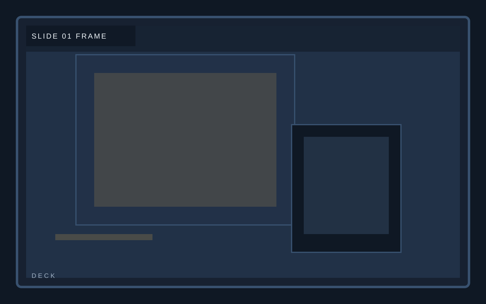
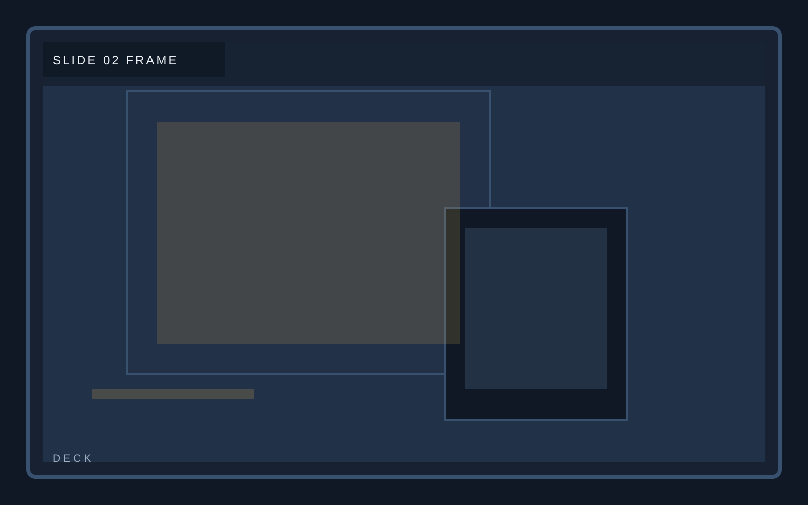
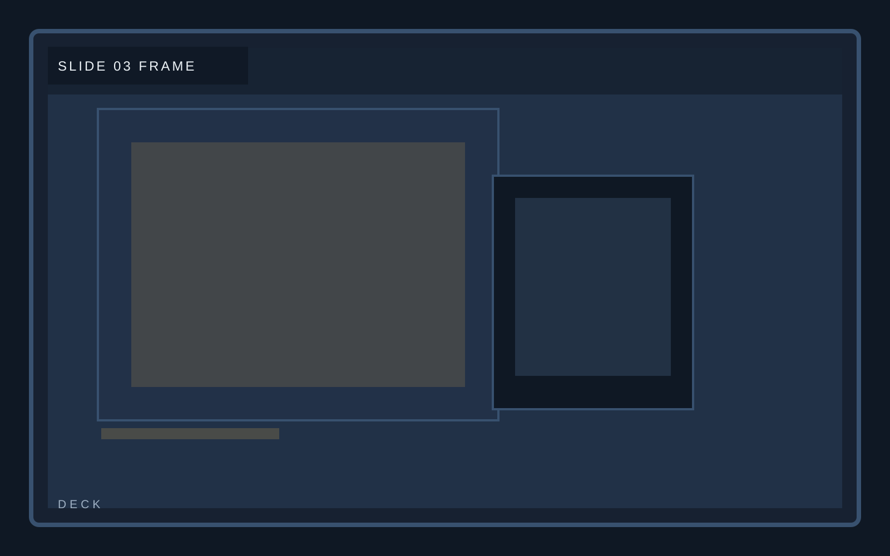
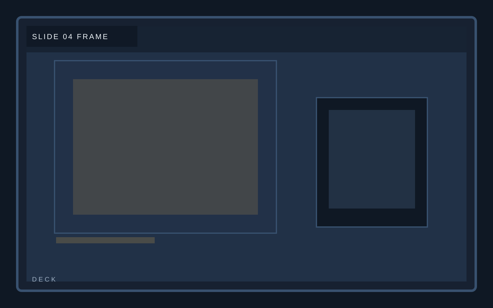
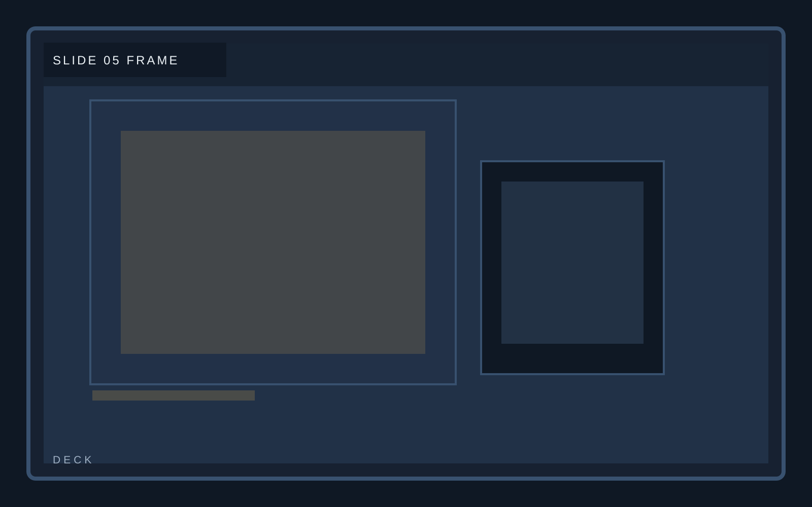
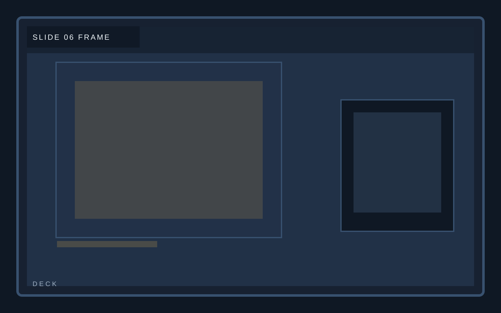
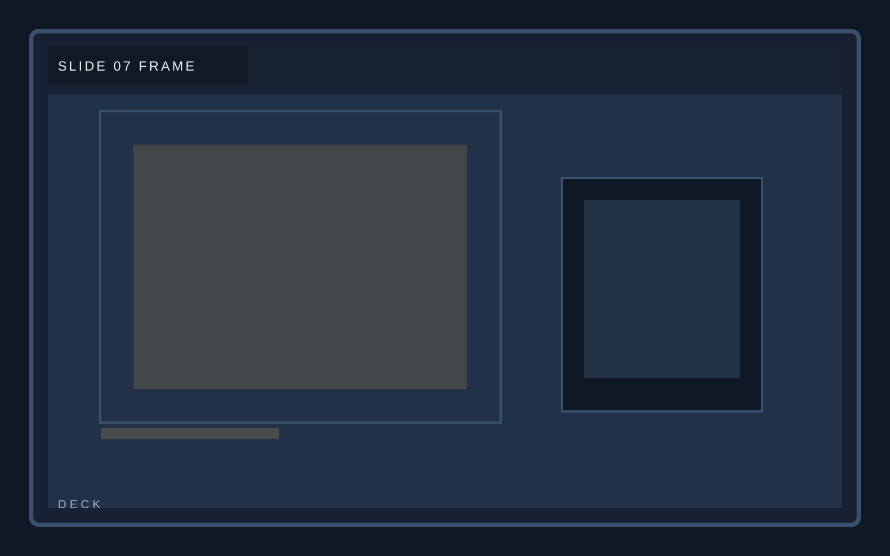
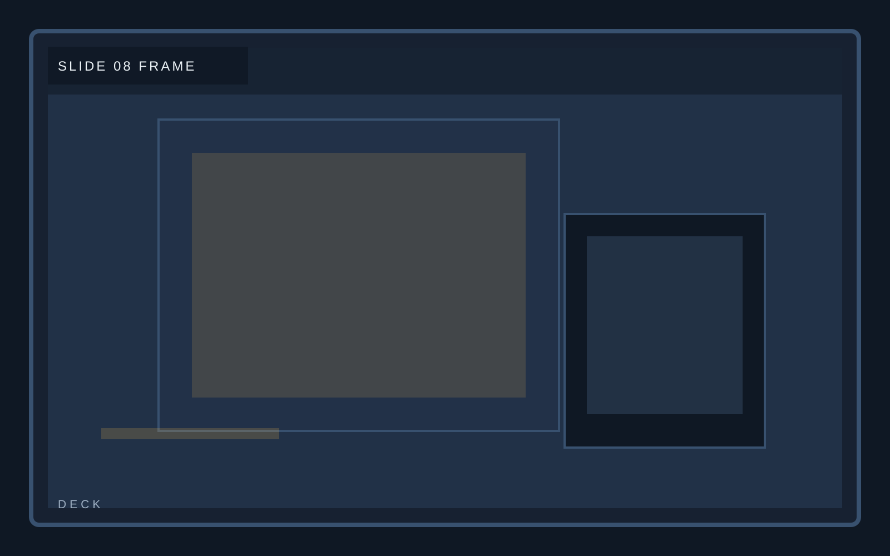

Ledger briefing
Slide 01
Ledger composes slide 01 as a designed narrative slide, balancing argument, evidence, and still-frame legibility. This deck page stays consistent with the template system while giving this section its own visual weight.

Ledger briefing
Slide 02
Ledger composes slide 02 as a designed narrative slide, balancing argument, evidence, and still-frame legibility. This deck page stays consistent with the template system while giving this section its own visual weight.

Ledger briefing
Slide 03
Ledger composes slide 03 as a designed narrative slide, balancing argument, evidence, and still-frame legibility. This deck page stays consistent with the template system while giving this section its own visual weight.

Ledger briefing
Slide 04
Ledger composes slide 04 as a designed narrative slide, balancing argument, evidence, and still-frame legibility. This deck page stays consistent with the template system while giving this section its own visual weight.

Ledger briefing
Slide 05
Ledger composes slide 05 as a designed narrative slide, balancing argument, evidence, and still-frame legibility. This deck page stays consistent with the template system while giving this section its own visual weight.

Ledger briefing
Slide 06
Ledger composes slide 06 as a designed narrative slide, balancing argument, evidence, and still-frame legibility. This deck page stays consistent with the template system while giving this section its own visual weight.

Ledger briefing
Slide 07
Ledger composes slide 07 as a designed narrative slide, balancing argument, evidence, and still-frame legibility. This deck page stays consistent with the template system while giving this section its own visual weight.

Ledger briefing
Slide 08
Ledger composes slide 08 as a designed narrative slide, balancing argument, evidence, and still-frame legibility. This deck page stays consistent with the template system while giving this section its own visual weight.
